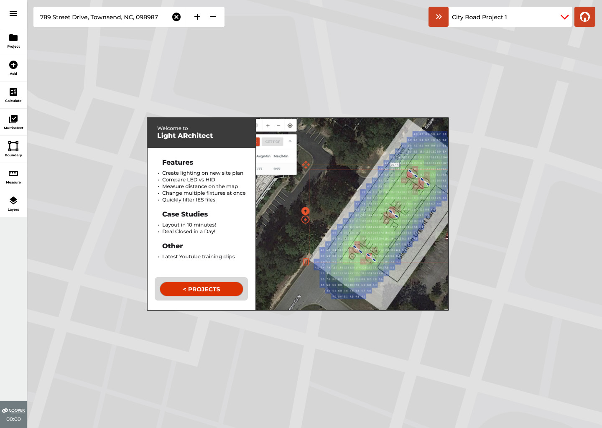
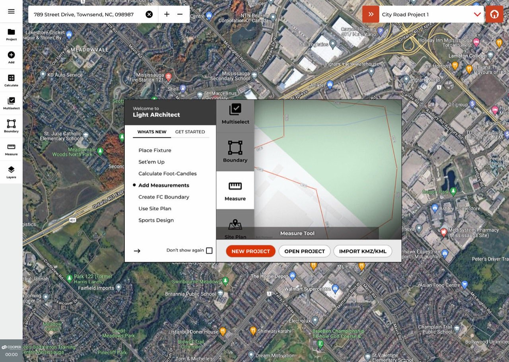
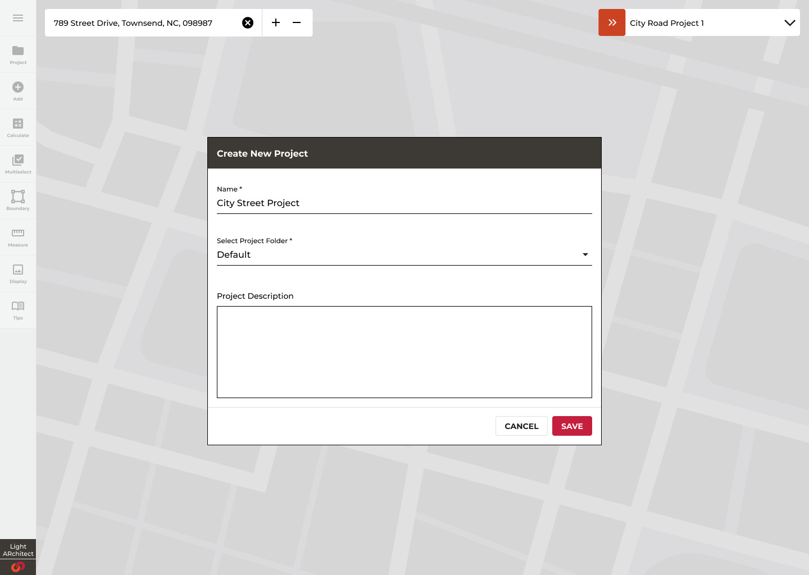
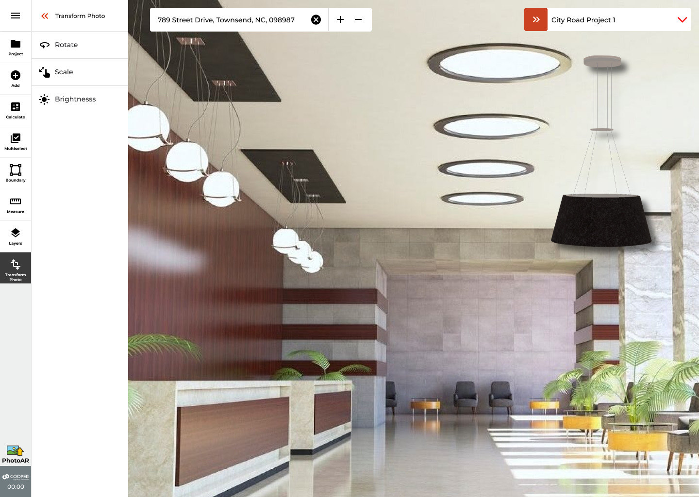

Light ARchitect
the tool that designs light
Six years turning a specialist's craft into a product: from one of commercial lighting's first AR apps, to a satellite-imagery design platform, to AI that proposes compliant layouts and lets the human keep the call. Three of its interaction models became US patents.

A specialist's craft, put in everyone's browser.
Light ARchitect is Cooper Lighting's free design tool for commercial lighting: search an address, draw the site on live satellite imagery, place or auto-generate fixtures, and get standards-grade photometrics with a spec-ready PDF. It runs in the browser and on iOS, where it began as an AR app. The product's own onboarding cites its customers' stories: a layout in 10 minutes, a deal closed in a day.
I led experience design across the product's whole arc — AR, the satellite web platform, and the AI autolayout system. The numbers below are the honest ones: patents are public record; the workflow compression is representative, not a measured benchmark.
Photometric expertise was the bottleneck.
The patent that came out of this work states the problem plainly:
"Lighting design for an outdoor area such as a sports field typically involves examining the outdoor area, and based on desired illuminance, determining type and specification of light fixtures, locations of light poles, light pole heights, orientations of the light fixtures, etc. and estimating the expected illuminance. The process of outdoor area lighting design is typically time consuming."
— US 2023/0281351, TEMPLATE-BASED LIGHTING DESIGN · BACKGROUND (PUBLIC RECORD)
Behind "time consuming" sit three structural walls. Every one of them is a design problem, not an engineering problem — because the physics already worked; it was the people who were locked out.
IES file formats, uniformity ratios, optic taxonomies, light-loss factors. The literacy lives in a small pool of specialists; everyone else queues.
A parking lot could consume days: site visit, manual modelling, spec selection, review loops. Sales conversations stalled on drawings.
A 250,000+ file photometric catalog. The right fixture-optic-mounting combination existed; finding it was its own expert task.
Four eras, one through-line.
The product grew by moving the design surface closer to the person who needed it: first the jobsite camera, then the satellite map, then an AI that drafts the layout for you. Each era kept the last one's promise — the numbers stay defensible.
Among the first AR apps in commercial lighting: stand on site, place a virtual fixture, see the light in context.
Boundaries, measurement, live photometric calculation, and the curated IES library — design from anywhere.
Draw the boundary, state the goals; the system proposes ranked candidate layouts you refine — never a black box.
High-bay grids for warehouses and data centres; moveable-pole sports retrofits. I owned the UX definition for both expansions.



Four users, one surface.
The research insight that shaped everything: experts resent oversimplification, and novices drown in depth. The lighting designer wants the light-loss factor exposed; the sales agent wants a client-ready picture before the meeting ends. Same tool, opposite tolerances.
Progressive disclosure became the architecture, not a pattern: defaults that produce a defensible design with no configuration, and an "advanced" layer that exposes every parameter the specialist expects to find — grid size, LLF, uniformity targets — exactly where they expect to find it.
Deep photometric expertise. Uses the platform to move faster without giving up control of a single variable.
Validates fixture counts and placement for bids. Field-first; needs the numbers to survive an inspector's questions.
Needs a compelling, correct concept during the conversation, not a week after it.
Retrofits: parking lots, warehouses, yards. Wall packs, energy targets, and a PDF for procurement.

Designing spaces you've never stood in.
Moving design from the jobsite camera to a bird's-eye satellite view traded presence for reach — and made scale fidelity the trust currency. The boundary tool uses familiar polygon drawing; the measure tool answers in feet or meters; a site plan can be uploaded and aligned to the imagery. If the on-screen tape measure disagrees with the one in the truck, the product is dead. It doesn't.



Move a pole. Watch the standard react.
This is the core loop of the product, rebuilt in-page: sixteen luminaires on a parking plate, a live footcandle grid, and the basic parking-lot test (≥ 0.2 fc maintained minimum, ≤ 20:1 max:min uniformity) judging every edit. Drag a pole, click empty ground to add one, double-click to remove. Keyboard: Tab to a luminaire, arrow keys move it, Delete removes it.
How to read the photometric map
AVG — mean illuminance across the stat area. The target is driven by the minimum, not the average; a compliant lot typically averages 1–3 fc.
MAX — the brightest cell, directly under a pole. Peaks several times the average are normal; uniformity is judged by MAX:MIN, not MAX alone.
MIN — the darkest cell, the design's weak point. The design target holds ≥ 0.2 fc maintained at grade for parking lots and drive aisles.
MAX:MIN — uniformity. The basic parking target allows up to 20:1; lower is more uniform. AVG:MIN is the ratio commercial design guides judge; the shipped product reports both.
Targets are basic parking-lot requirements at grade (not security lighting); transaction areas call for 0.9 fc pre-curfew / 0.2 post at 15:1, and project specifics may set different criteria.

The real product runs this loop against genuine IES photometry — every fixture's measured light distribution — and then does the thing the demo can't: exports a photometric summary a spec reviewer will accept, per stat area, with a bill-of-materials path to purchase.
That pairing was deliberate everywhere: play first, then the receipt. The interface invites experimentation precisely because the math underneath refuses to flatter you.
Filter, don't browse.
The research told us experts think criteria-first: they don't flip through a catalog, they eliminate everything that doesn't match the job. So the library never renders unfiltered. Pick the application and the optic, and 5,000 curated files collapse to the shortlist — rendered with virtualized lists so even the widest filter stays instant.
Where no perfect file existed, the AI era added another answer: specify the parameters, receive the photometry — replacing hour-long catalog hunts for edge-case configurations.

The AI proposes. You keep the decision.
The hardest design problem in the product wasn't the solver — it was the feedback loop. Probabilistic output has to meet a hard photometric standard, in front of users who range from "just light it" to "show me every constraint." The shipped answer was a two-stage model: minimal inputs first (boundary, pole count, a uniformity target), then progressive refinement of the generated result.
Two details mattered as much as the algorithm. Staged progress with honest labels — generating · calculating · solving — because silent compute reads as broken compute. And ranked candidates rather than one answer, because experts iterate; a single output invites distrust, three invite judgement.
The IES library and layout intelligence later moved into CORE, Cooper's cloud platform, as Fixture Recommendation and Smart Layout — AI reaching the sales desk and the spec sheet. That chapter is the Enterprise AI case study.

Encode the jargon, so users state intent.
Optic distributions are where photometric expertise gets densest — and where the AI earned its keep. Rather than asking users to know the taxonomy, the system encodes the strategy: which distribution suits a high mounting height, what a boundary corner needs, when spill control outranks coverage. The user states the goal; the ruleset picks the glass.
Spill light is a preference ladder, not a switch — the system tries the strictest tier that has real photometry available for the chosen model, and degrades gracefully instead of failing. Wall packs joined poles as first-class citizens with their own wattage and context rules, and up to three fixture models can mix in one design with per-model optic validation.
| Optic | Use case | Rule the system encodes |
|---|---|---|
| 5NQ | High-mount fixtures | Preferred at tall mounting heights — a narrower vertical throw that keeps tall poles from wasting light past the target plane. |
| 5WQ → 5MQ | Area coverage | Wide first; if the average target isn't met, the medium beam is recommended as the fallback — the choice explained, not silent. |
| SLL / SLR | Boundary corners | Side-throw optics triggered by boundary geometry when a corner angle closes tighter than ~120°. |
| SL3 / SL4 | Spill control | The spill-light ladder: strictest tier first for perimeter and corner positions, relaxing tier by tier only when no compliant file exists. |
| T3 / T4 | Wall packs | Context-driven: narrower back-of-building throw when walls light alone, wider forward throw when they work alongside poles. |
A pre-engineered field, aligned in one gesture.
Sports lighting is the most codified corner of the domain: sanctioned foot-candle classes, pole counts, mounting heights per sport and level of play. That codification is exactly what makes it template-able — drop a baseball, softball, football, soccer, or tennis template on the satellite view, rotate it onto the real field, choose the fc class, done. This interaction model is US 2023/0281351. The current evolution extends it to retrofits: moveable poles, for fields where the concrete bases already exist.


Interaction design that became IP.
The clearest outcome is public record: three US patents on how this product lets people design light — the satellite design surface, the sports templates, and the guided boundary-to-layout flow — co-inventor, assigned to Signify, with a fourth application pending. On the About page's ledger this work carries the company's Light ARchitect · $6M+ figure.
Place and aim luminaire models over a live satellite view — the design surface itself.
Google PatentsOne-tap sports templates aligned over satellite imagery, fc classes pre-engineered.
Google PatentsThe guided boundary-to-layout flow that turns a drawn shape into a compliant plan.
Google PatentsDesigning the feedback loop, not just the output — staged progress, ranked candidates, refinement — is what made the AI trustworthy to experts. Domain research done as identity work (how a photometric specialist thinks, not just what they click) produced the patterns that lasted: criteria-first filtering, progressive disclosure, receipts beside every simulation. And treating interaction design as patentable IP changed how the whole organization valued the discipline.
Instrument real workflow-time telemetry, so "days to minutes" becomes a measured claim instead of a representative one. Benchmark usability formally across all four user types, not just the loudest two. And get the indoor expansion into users' hands earlier — the warehouse grid problem is more tractable than the outdoor one, and it waited longer than it needed to.
The through-line to the rest of this portfolio is direct: a system that computes, ranks, and explains, in front of a person who keeps the decision. Light ARchitect is where that thesis was earned — on parking lots and ballfields, before it ever met a threat feed.